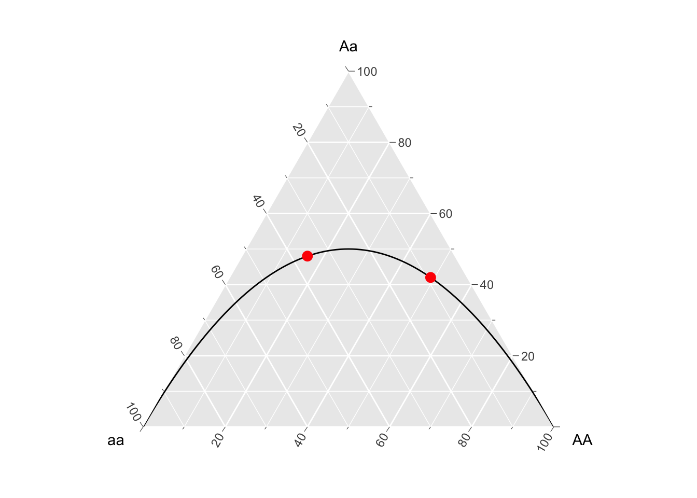
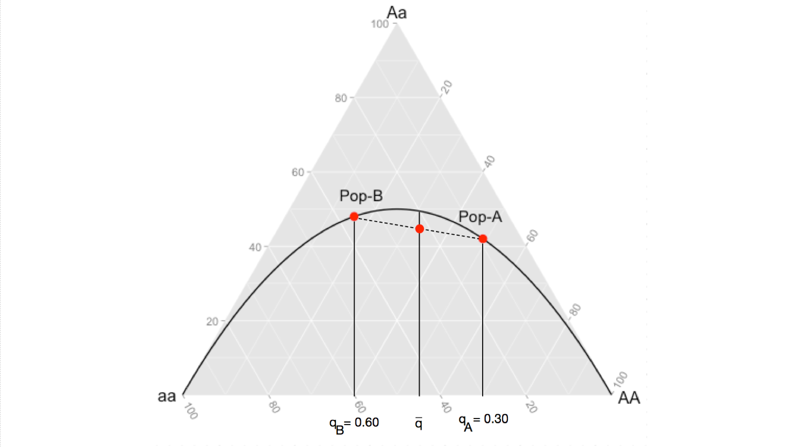

knitr::include_graphics("media/wahlundTwoPop.png")

Inbreeding may be indicated in the parameter \(F\) due to selfing (the most direct type @ref(selfing)), mating amongst relatives (the most common type, @ref(mixed-mating-systems)), or due to problems that we as the investigator cause due to our ignorance of the underlying demography. Yes, if done incorrectly, the way in which you sample individuals may may lead to incorrect inferences. The Wahlund effect is one such way that problems in your study design may incorrectly result in inferences of inbreeding. Here is how it works.
Consider two populations, both of which are at Hardy-Weinberg Equilibrium. The first population has allele frequencies at a two allele locus of \(p_A= 0.7;\;q_A=0.3\) and the second population has allele frequencies of \(p_B=0.4;\;q_B=0.6\). For simplicity, assume that both populations are completely isolated and have \(N=100\) individuals each. As such, we find the following genotypes in each population, each of which is exactly what is expected under HWE.
knitr::include_graphics("media/wahlundTwoPop.png")
If you did not know, a priori, these were isolated populations and artificially combined them, you would have a single composite populations created from two individual populations, both of which are in HWE. It would look like this.
knitr::include_graphics("media/wahlundOnePop.png")The question here is, given the artificial coalescence of two HWE populations, is the composite population also in HWE? Lets see.
The observed allele frequencies from the 200 individuals are:
[ \[\begin{aligned} p_A & = \frac{2*65 + 90}{400} \\ & = 0.55 \\ p_B & = \frac{2*45 + 90}{400} \\ & = 0.45 \end{aligned}\]]
which would result in expectations under HWE for genotypes to be:
[ \[\begin{aligned} E[N_{AA}] &= p^2 * N \\ & = 0.55^2 * 200 \\ & = 60.5 \end{aligned}\]]
[ \[\begin{aligned} E[N_{Aa}] &= 2*p*q * N \\ & = 2*0.55*0.45 * 200 \\ & = 99 \end{aligned}\]]
and
[]
which is not quite what we got in the population. We observed fewer heterozygotes (and correspondingly more homozygotes) than expected. A reduction in heterozygosity like this, would produce a F-statistic as:
[ \[\begin{aligned} F & = 1 - \frac{H_O}{H_E} \\ & = 1 - \frac{ \frac{N_{Aa}}{N} } { 2pq } \\ & = 1 - \frac{ 0.450 } { 0.495} \\ & = 0.091 \end{aligned}\]]
which is a level of inbreeding of almost 10%! How can that be? This messes everything up, how can you trust any inbreeding statistic? In the most direct sense, you cannot know if what you are seeing is true inbreeding or an artifact of your crappy sampling scheme. This is why we do base all of our inferences on a single parameter from a single analysis. What you do consider is the totality of the data in light of what you know about the biology of the organism you are studying. Is it reasonable that the spatial (or ecological) scale of your sample scheme could in fact encompass two completely isolated groups? This is why biologists must know their study systems and we cannot just go out and blindly estimate parameters.
The magnitude of the estimated \(F\) is estimable and it is important to see how it works as we will return to this later when we look at population subdivision. In our example, both population had equal numbers of individuals but deviated from each other in their allele frequencies. The rate of heterozygosity in our populations were:
[ {Q} = ]
which simplifies to:
[ \[\begin{aligned} \bar{Q} &= p_Aq_A + p_Bq_B \\ &= p_A(1-p_A) + p_B(1-p_B) \end{aligned}\]]
Now this will always be smaller than
[ 2{p}{q} = 2]
unless \(p_A = p_B\).
In Edwards (2000) text, Foundations in Mathematical Genetics, he uses a ternary plot framework to describe this effect. A ternary plot is a way to visualize data corresponding to three different axes but displayed in two space, under the constraint that the frequencies in the three groups sum to unity. In our case, we can use the genotype frequencies as the axes, one each for \(E[AA]\), \(E[Aa]\), and \(E[aa]\). Populations in Hardy-Weinberg equilibrium will fall on the line representing \(p^2\), \(2pq\), and \(q^2\). Here is how to visualize this in R.
library(ggtern)
p <- seq(0,1,by=0.01)
q <- 1-p
df <- data.frame( AA=p^2,
Aa=2*p*q,
aa=q^2)
df.pop <- data.frame( AA=c(.49,.16),
Aa=c(0.42,0.48),
aa=c(0.09,0.36),
pop=c("Pop-A","Pop-B"))
ggtern(df,aes(x=aa,y=Aa,z=AA)) + geom_line() +
geom_point(data=df.pop,color="red",size=3) +
geom_text(aes(x=aa-0.02,y=Aa+(0.1),z=AA,label=pop),data=df.pop,size=4) 
When your sampling design combines both of these populations into a synthetic population, you change the allele frequencies to \(\bar{p}\) and \(\bar{q}\). However, since the change in expected genotype frequencies is not a linear change (notice how the expectation line in the figure curves) then the average allele frequencies produce an expectation of \(2\bar{p}\bar{q}\) greater than the average of the observed heterozygosities. This is demonstrated in the following image, the observed level of heterozygosity in the synthetic population, being the average of the two (where the dashed line intersects the expectation given for \(\bar{q}\)), is always going to be less than then the expected heterozygosity because the product of an average is always going to be less than the average of a product.
knitr::include_graphics("media/wahlundTernary.png")
The take home message here that for even the most basic of parameters, we need to be careful in our interpretations. It is the totality of evidence, from many sources, that helps us understand the dynamics of the species we examine.